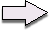
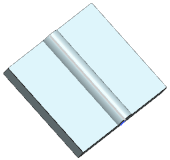
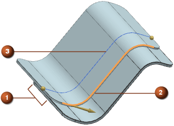
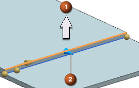
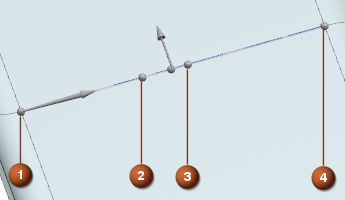

类型
类型列表
指定珠焊的横截面
椭圆
管道
草图
主要部件
选择面
让您为各个主要连接部件选择一个面。
默认情况下，路径是根据选定部件的法向面来选择的。
NX 将会根据您选择的第一个面以及您选作路径的曲线来自动判断面。
焊缝位置列表
指定路径，横截面将会沿此路径扫掠以创建珠焊。
次要部件
将选定路径投影到选定的次要部件上，如果您不选择次要部件，路径将投影到主要部件上。
将选定部件投影到选定的主要部件上
所在空间
将根据在偏置组中定义的参数偏置选定路径，不进行投影。
让您为各个次要连接部件选择面。
珠焊底部将放在这个部件上。
NX 将根据您选择的第一个面以及选作路径的曲线自动判断面。
路径
选择曲线或点
让您选择曲线或点，珠焊的横截面将沿着选择的对象扫掠。
您只能选择主要部件上的边，如果边不在工作部件中，将会在工作部件中创建边的非关联副本。
要使用不同的偏置选择多条曲线，就必须使用添加新集 按钮来指定多个曲线集。
如果您选择选择的曲线集之间有缝隙，将会在选定曲线间的缝隙处创建一条光顺的桥接曲线。
可以使用反向 选项。
限制
让您指定珠焊特征沿着您指定路径的起点与终点。
定义曲线的起点和终点时，可以使用位置列表。开始与结束手柄将会显示在图形窗口中。
偏置
指定偏置的类型
所在面
在选定曲线处创建珠焊。
您可以使用距离选项，或者图形窗口中的手柄在选定面上偏置珠焊特征。
可以使用反向 。


中心线
在主要面与次要面重叠处的中心创建珠焊。
将会根据选定曲线的端点延伸中心线。

—主要面与次要面重叠处
— 位于主要面边缘处的选定曲线
— 位于重叠处中心的珠焊中心线
沿法向
设置珠焊沿面法向的偏置值。
您也可以使用图形窗口中的手柄来更改这个值。
当创建管状珠焊时，使用这个选项来移动位于钣金一侧的珠焊特征。
添加新集
将一个或多个路径添加到现有路径中，每个路径可以有各自的参数。
添加的路径显示在列表框中。
参数
让您更改沿扫描路径处的参数值。
大小
当类型设置为椭圆或管道时可用。
指定横截面的大小，您可以选择标准大小，也可以使用定制的大小。
如果您更改了短半轴、长半轴或者直径的值，将会创建定制的大小。
标准大小是根据用户默认设置对话框→焊接助理→珠焊选项卡来设置的。
提示
要查找用户默认设置，选择文件→实用工具→用户默认设置，然后点击查找默认设置 。
选择草图
当类型设置为草图时可用。
让您指定一个表示珠焊横截面的草图。
草图必须定义在 XY 平面上，原点为(0，0)，将从原点开始沿引导曲线创建珠焊。

— 面的法向与草图的 Y 轴对齐。
— 手柄与草图的 X 轴对齐。
位置
弧长
指定更改横截面大小的位置。
使用参数组中的添加新集 按钮来沿路径添加多个横截面，添加的点将会显示在列表框中。
List box
在第一行显示选定路径的起点，默认情况下，它的名字叫作起点 1。
可以使用添加新集 按钮来添加更多点，添加于 起点 1之后的截面称为终点，添加终点将会在起点与终点之间创建过渡区域，更改起点与终点的大小选项以更改横截面。
示例

— 路径起点，这个点并不会在列表框中列出
— 过渡区域的起点这个点在列表框中叫做起点 1。
对于本例，起点 1的：
短半轴= 3
长半轴= 6
— 过渡区域的终点，这个点在列表框中叫做终点。
对于本例，终点的：
短半轴= 6
长半轴= 9
— 路径终点，这个点不会显示在列表框中。
最终的带变化横截面的珠焊。
可以连续点击创建新集 ，来一个接一个地创建起点和终点，创建您想要的截面数目。
可以使用参数组中的位置和弧长选项，或者使用图形窗口中的手柄来更改各个点的位置。
短半轴
当类型设置为椭圆时可用。
设置椭圆横截面的短半轴。
长半轴
设置椭圆横截面的短半轴。如果已经选择了标准大小，这些设置将会覆盖所选择的标准。
直径
当类型设置为管道时可用。
设置管道横截面的直径，如果已经选择了标准大小，这些设置将会覆盖所选择的标准。
焊接特性
焊接特性框
列出其它可以指派给用户定义焊接的属性。
这些属性是根据用户默认设置对话框→焊接助理→珠焊选项卡来配置的。
参见在线帮助以获取更多关于焊接特性的信息。
从对象继承
让您选择一个对象，珠焊特征将会继承这个对象的属性。
设置
公差
设置距离公差的值。
参见在线帮助以获取更多关于建模首选项的信息。
 。
。